|
< |
|
HELP FIND THE FOLLOWING LOCATIONS
PAGE 1
THE AVENGERS:
The Murder Market
(Peter Graham Scott: December
1964)
John Steed (Patrick Macnee) and Lovejoy (Patrick Cargill) and his staff
attend
the 'funeral' of Mrs. Peel. Robert Stone (John Woodvine) is seen
watching the
events from a distance.


THE AVENGERS:
Silent Dust
(Roy Baker: June 1965)
Unknown 1
- Emma Peel (Diana Rigg)
and Quince (Aubrey Morris) are stopped in their
tracks by Mellors
(Conrad
Phillips). Peter Omrod
(William Franklyn),
rides up on his horse and sends Mellors
on his way. Mrs Peel asks Omrod
if he knows anything about the
vanishing birds.
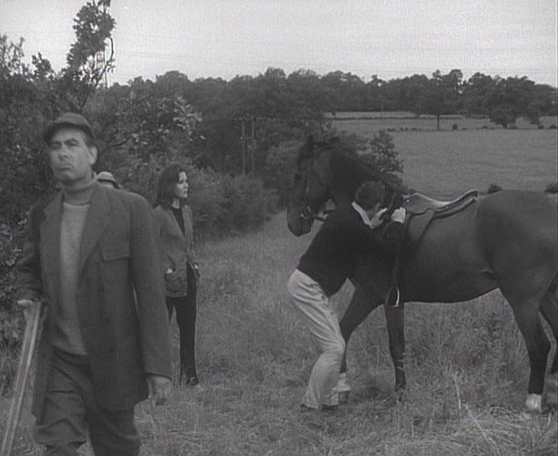
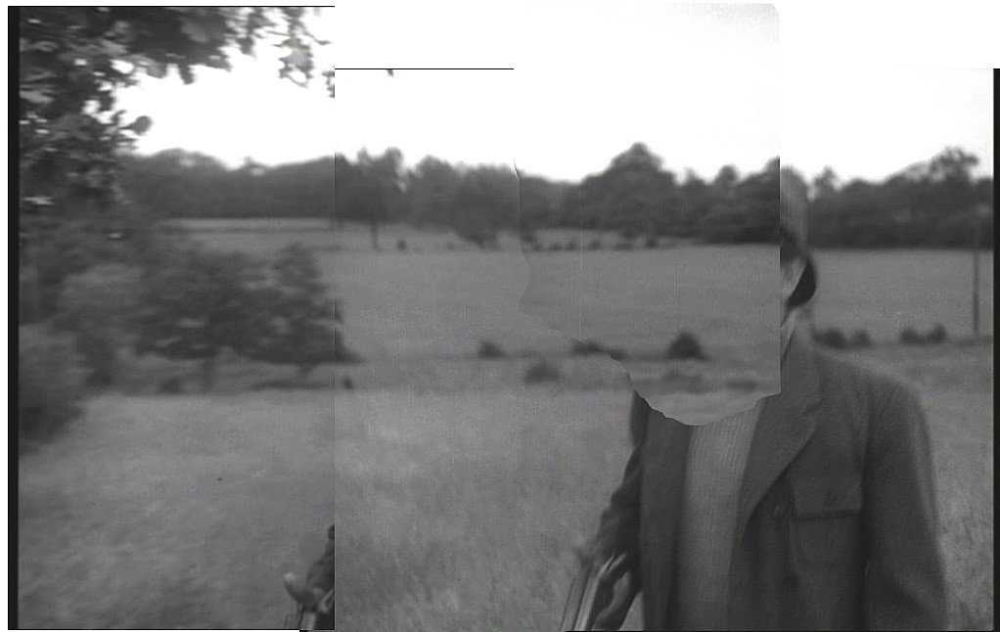
 A number of
farms and fields feature in this episode, but this one has not yet been
identified.
A number of
farms and fields feature in this episode, but this one has not yet been
identified.
Unknown 2 -Emma Peel (Diana Rigg) confronts Quince (Aubrey Morris) as to why he was spying on here and Steed.
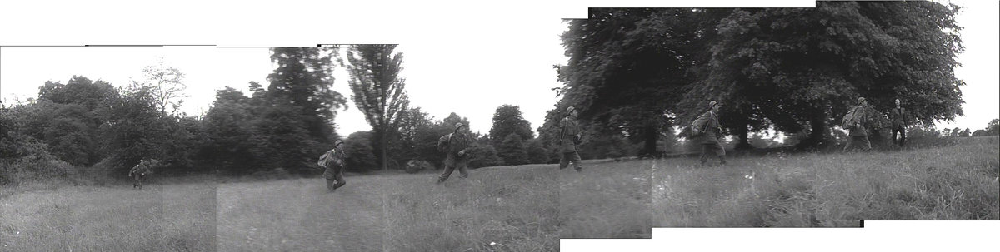
 This is
either shot at the above location or N35: Aldenham
Park.
This is
either shot at the above location or N35: Aldenham
Park.
THE AVENGERS:
Killer (Cliff Owen:
September 1968)
Unknown 1 - Steed and Lady Diana
Forbes-Blakeney watch from The Pirate as a bus leavesd
the factory and
drives away.
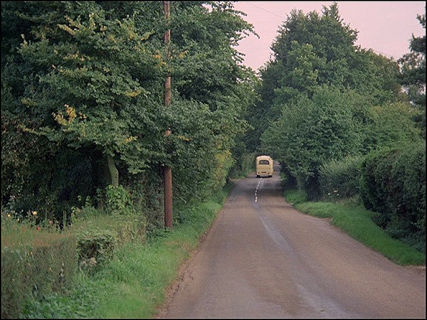
Unknown 2 - On Steed's instructions Lady Diana Forbes-Blakeney follows the bus from the factory in her MG.
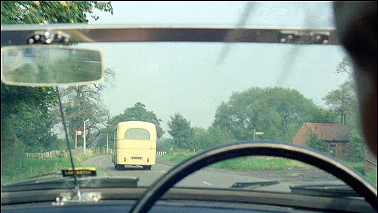
\THE AVENGERS:
Quick-Quick
Slow Death
Mrs Peel meets Steed whilst he is shooting tin cans in his
backyard.
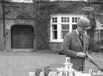
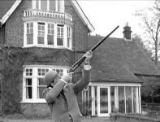
and
THE SAINT: The Well
Meaning Mayor (Jeremy Summers: 1963)
The home of Mayor Sam Purdell
and his family.
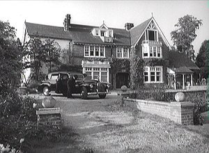
 This house
bears a resemblance to the, now demolished house, Hillcrest, O10 – but it is not Hillcrest.
This house
bears a resemblance to the, now demolished house, Hillcrest, O10 – but it is not Hillcrest.
THE AVENGERS:
False Witness
(Charles Crichton: June 1968)
Unknown 1
- Tara is searching Plumbers
home when she sees an milkman take something from the kitchen. As he
leaves in
his ‘Dreemykreem
Dairies’ milk float she follows in her Lotus Europa.
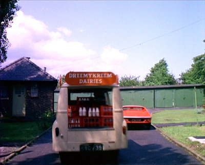
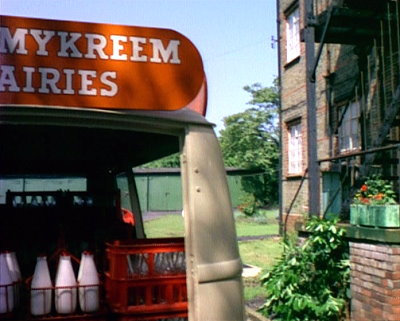
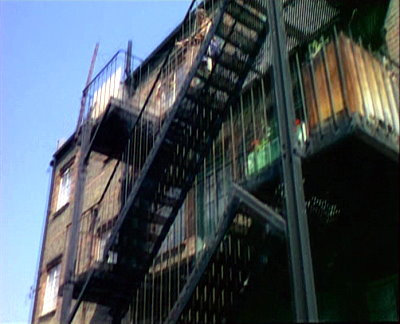
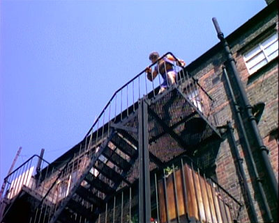
THE AVENGERS: Man-Eater
of
Steed and Mrs Peel exit the episode on the back of a hay cart.
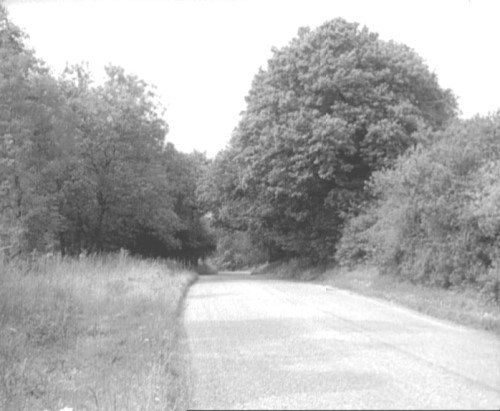
 Mike
Richardson - could be a road within the grounds of The Grove, Watford.
Mike
Richardson - could be a road within the grounds of The Grove, Watford.
Think you know a spot? Need a bigger image? Email me.
< Previous | Index | Avengerland | Next >
Copyright © 2003 Anthony R. McKay